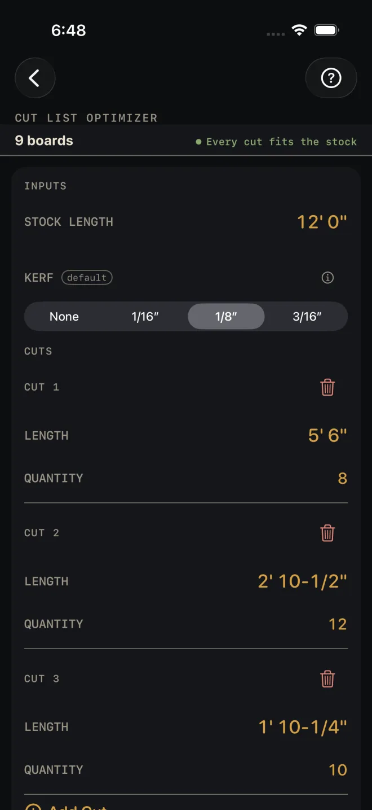
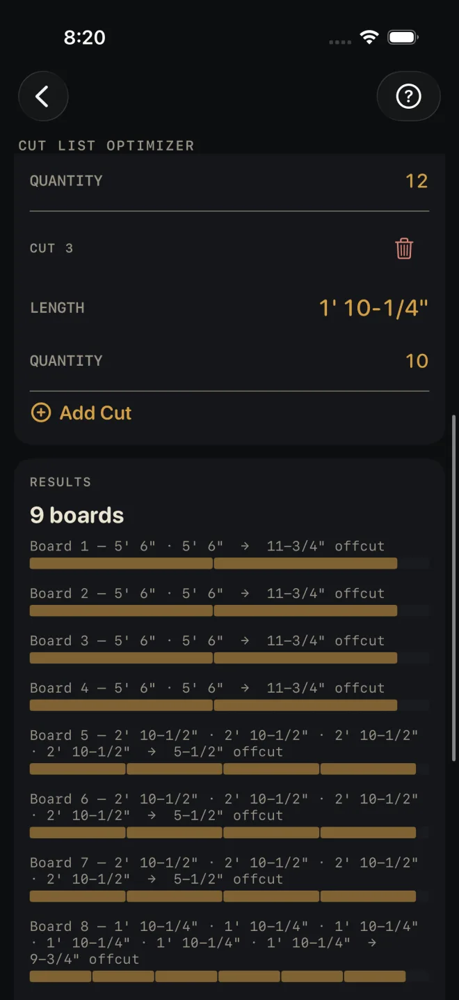
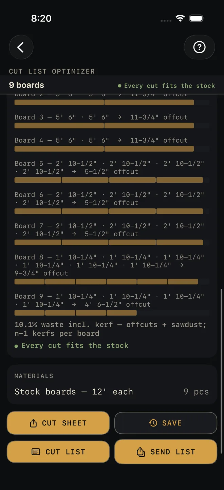

Cut List Optimizer
What it's for
You have a list of parts to cut and one length of stock to cut them from. The optimizer works out which parts come out of which board, how many boards to buy, and how much ends up as offcut and sawdust. The parts can be typed in, or sent over from another calculator. Nothing here is checked against code.
Step by step
The screen opens with 8' 0" stock, a 1/8″ kerf and no cuts. There is no answer until you add one. The example is a job with three parts cut from 12' 0" stock.

1 2 4 5- STOCK LENGTH — the length of the boards you are buying. It opens at 8' 0". The example uses 12' 0". One run uses one stock length.
- KERF — the width your blade turns to sawdust: None, 1/16″, 1/8″ or 3/16″. It opens at 1/8″.
- Tap Add your first cut. A block headed CUT 1 appears.
- LENGTH — the finished length of that part. CUT 1 in the example is 5' 6".
- QUANTITY — how many of that part, 8 here. Tap it and type the number. There is no stepping through one at a time.
- Tap Add Cut for each different length. The example adds 12 at 2' 10-1/2" and 10 at 1' 10-1/4". The red bin beside a CUT heading deletes that part.
- Read the answer in RESULTS, under the cuts: 9 boards, then one row per board. The headline stays pinned under the title while you scroll.
- Scroll to the end of the board list for the waste line and the check.
- Under RESULTS are MATERIALS and the buttons for taking the plan with you.

6 7
8 9Parts sent from another calculator
Stairs and Hip & Valley have an OPTIMIZE button with their export buttons. It opens this screen with the parts already in the CUTS list, and sets STOCK LENGTH when the sending calculator suggests one. The incoming parts replace whatever rows were here. After that you can edit them like any others. See Send to the Cut List Optimizer.
Reading the results
Before there is a job the headline reads Add your first cut. If you have rows but none has both a length and a quantity, it reads Give a cut its length.
The headline is the number of boards to buy. In the example it is 9 boards. If it ends (placed cuts only), some parts did not fit and are not counted. Look at the red line.
The board list comes next, one row per board: the parts cut from it in order, then the offcut if there is one, with a bar under it showing the parts in gold and the offcut in grey. Cut each board in the order given. In the example, boards 1 to 4 each take two 5' 6" parts and leave an 11-3/4" offcut. Boards 5 to 7 each take four 2' 10-1/2" parts and leave 5-1/2". Board 9 is the last and part full, with a 4' 6-1/2" offcut.
The waste line is everything you buy that does not end up as a part — offcuts and kerf together — as a percentage of the stock bought. The example reads 10.1% waste incl. kerf, and the line says how the kerf is counted: a saw passes between pieces, so three parts from one board take two kerfs, one fewer than the parts on that board. The offcut, if there is one, takes the last cut.
The check. Green reads Every cut fits the stock. Red reads DOES NOT FIT STOCK: followed by the parts that are longer than the stock, such as a count and a length. Those parts are left out of the plan, never dropped quietly. The fix is a longer STOCK LENGTH, or correcting the LENGTH of that cut.
The optimizer places the longest parts first and puts each part in the first board that has room for it. That lands at or near the fewest boards. It is not a proof of the minimum.
This results card has no BASIS & WHAT WAS ASSUMED row and the screen has no drawing. The two things it assumes are on the screen: the stock length and the kerf.
MATERIALS is one row, the stock boards to buy, with the stock length after the dash. The example reads Stock boards — 12' each, 9 pcs.
The buttons wait for a job. CUT SHEET shares a PDF with the inputs, the board count, the waste and the parts for each board. It lists the first 20 boards and says so if there are more. SAVE puts the result in History. CUT LIST puts the plan on the Lock Screen, one check-off per board with that board's cuts, for the first 30 boards. SEND LIST sends the same list to another phone as a checkable page.
Common mistakes
- Entering the nominal stock length when you trim the ends. There is no trim allowance. If you square both ends of every board first, enter the length that is left as STOCK LENGTH.
- Setting KERF to None for a real saw. A tight plan that fits on paper then comes up short on the last part of the board.
- Reading a headline with (placed cuts only) as the whole job. The parts on the red line still have to come from somewhere.
- Mixing stock sizes in one run. Every board in a plan is the same length. Run the list again for a second stock length.
Related
- Send to the Cut List Optimizer
- Stairs and Hip & Valley — the calculators that send parts here
- Board Feet — footage and cost for the boards
- Cut sheets and templates
- Cut list on the Lock Screen
- Saving and History